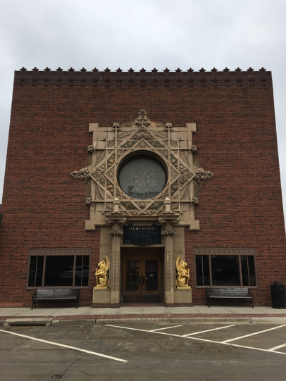

Photo Essay
Nina Galanter


Welcome to the final projects of Leadership in an Age of Automation and Income Inequality, taught by Joe Mellin at Grinnell College in February 2018.
LaAnna Farnelli
Carlton Segbefia
Nina Galanter
Nate Williams, Katie Hess, Audrey Enerson
Existing today in Silicon Valley is a progressive bubble which needs to burst. Proud democrats who shame Trump and conservative ideology and work at large businesses like Google, Facebook, Microsoft, Amazon, and countless startups. Silicon Valley stands proud as a group which represents an inclusive, more equal, progressive future; however, when policy threatens their way of life, they no longer protest, take action, and make moves for change. Technology executives perpetuate problems and power dynamics existing. Their work revolves around the world of tech: highly educated people with high salaries working in an ecosystem almost exclusively consisting of people with the same worldview. Here, diversity is awesome, the future is tech, and with technology, the future will be better and brighter.
Although this rhetoric dominates the stage in many coastal conversations, it ignores the real problems that many people are facing. No, all small businesses are not incorporating technology. No, all small businesses do not make over a million dollars. Technology has created a gild on progressivism. Not all real people live in Silicon Valley, not all real people are involved in technology. Not all real people have a college degree. Real people are facing a myriad of issues and need to be acknowledged in decision making on the world stage.
As part of an assignment for class, we spent the past couple weeks interviewing some business owners near us in central Iowa. These people expressed many perspectives on the local economy and the growth of automation, but they all shared one belief: that massive corporate monopolies are the most immediate threat to their businesses. People discussed Amazon's careless displacement of their businesses. They talked about “small town syndrome” caused by mass emigration from towns where corporations have arbitrarily decided to close down factories. They showed us how strong cultural ties have been broken because people can't afford the time and resources needed to patron the businesses surrounding them and instead must turn to Walmarts and other superstores. Perhaps worst of all, however, is the fact that the corporate tech world seems to think this is a good thing! And this idea has expanded beyond the corporate tech world: cities are now competing to host Amazon's second headquarters. As long as businesses can profit more, the people who run these monopolies don't seem to care about the lives they are destroying.
According to a 2008 study in the Journal of Urban Economics, every Walmart opened reduces the number of retail jobs in a county by 150. This results in $1.4 less in retail earnings every year per county. In a country where the most common job sector is retail and sales, the opening of Walmarts very seriously impacts a large percentage of the working population. As the 17th largest company worldwide with a market cap of $221 billion, they of course should be returning a large percentage of that profit in the form of taxes that can then be used to fund government programs. However, that is not the case. According to Bloomberg, Walmart has $76 billion stored in overseas tax havens. But it's not just Walmart. Many other multinational companies like Apple, Amazon, and Starbucks are holding money in tax havens, too. While they espouse a rhetoric of “giving back to the community,” their actions clearly deviate.
One thing often not mentioned in discussions of the jobs created by large companies is the working conditions of those jobs. Uber drivers are considered independent contractors and therefore are not guaranteed benefits or collective bargaining rights. Amazon workers are encouraged to send anonymous feedback to each other's bosses and until recently some of the warehouses didn't have air conditioning. Many large companies' sole focus is making the largest profit possible and, in many cases, at the expense of the people they employ.
As the world calls for change, American corporations must follow suit. The technological revolution is here and happening, but unlike social movements in the past, we need to work together to ensure that everyone, not just those with the social, educational, and technological capital, can succeed. We need to break down the power dynamics that diminish the people who are excluded from the decision making table. We need to use technology for the better while also empowering those who would otherwise be left behind. Let's call attention to the people who can't code, let's call attention to America's small businesses: progressivism does not need to fall in line with the capitalistic practices that preceded it.
"In the following post, I write about my reflections upon engaging with local residents of Grinnell and my thoughts on what we can do as temporary residents to reinforce a sense of community. " —SoYeong Jeong
Zaria Kangethe
Jemuel Santos
Honorable Mr. Commerce,
I am Jemuel Santos, a Grinnell College student studying Computer Science. I am a part of a Leadership in a Future of Automation and Income Inequality class where we spoke to community members of Grinnell, including college students and people living in the town, about how the community of Grinnell can improve economically. While much of the town believes that Grinnell is economically sound, there were some voices that believed that Grinnell could benefit from more businesses. A bartender in town who works for Peace Tree believes that the business is doing well due to the fact that it brings the community together, and that the service can't be replaced by online services. Peace Tree has recently become a great hub where people of the town and students of Grinnell College can come and interact with one another. Much of the voices in Grinnell College also believe that the town can benefit from more businesses like these. Much of the student body wish that there were more places to go to in town. This is why I believe that a Bubble Tea shop can benefit the town of Grinnell. The new Bubble Tea cafe can provide as another hub where people of Grinnell College and the town can hang out and interact with one another. This business also introduces a new product which won't directly compete with other stores in Grinnell, such as Saints Rest which offers coffee. People from the town that we interviewed believed that another coffee shop would simply produce conflict with Saint's Rest because they would be in competition, and that it won't be of much benefit because it would be just another coffee shop. Some also believed that more businesses would be great for Grinnell due to the fact that it is near the I-80. Businesses in Grinnell can attract plenty of customers coming from the I-80 and thus, make Grinnell a more inviting place for the community. A Bubble Tea shop is only one business of the many that can benefit Grinnell. I believe that more fast-food chains such as Chipotle and Chick-fil-A would attract the attention of people coming from I-80, as well as college students. I think that this should be prioritized over retail stores which will directly compete with online stores, so they will not benefit Grinnell economically as much as fast-food businesses.
Thank you,
Jemuel
Jamie Friedman, Michael Kamp (photography)
Why should students support local businesses?
McNally's: a family-run business offering high quality products and service and fresh prepared meals.
Peace Tree Brewing Company: Iowa-ony handcrafted beers, whose names are "derived from memories and places in our community and our state" (source)
Giggles and Bows:
Grinnell Area Chamber of Commerce:
Sunrise Bakery: a New bakery where you can get freshly baked pastries, offers special orders for customers of all dietary needs.
Ace Hardware:
The Strand: since 1916! Make sure to go on Tuesdays to get free popcorn.
Check out the Grinnell Area Chamber of Commerce website for more information on local businesses!
Carlton Segbefia (Infographic Sources)
Nina Galanter (photo credit)